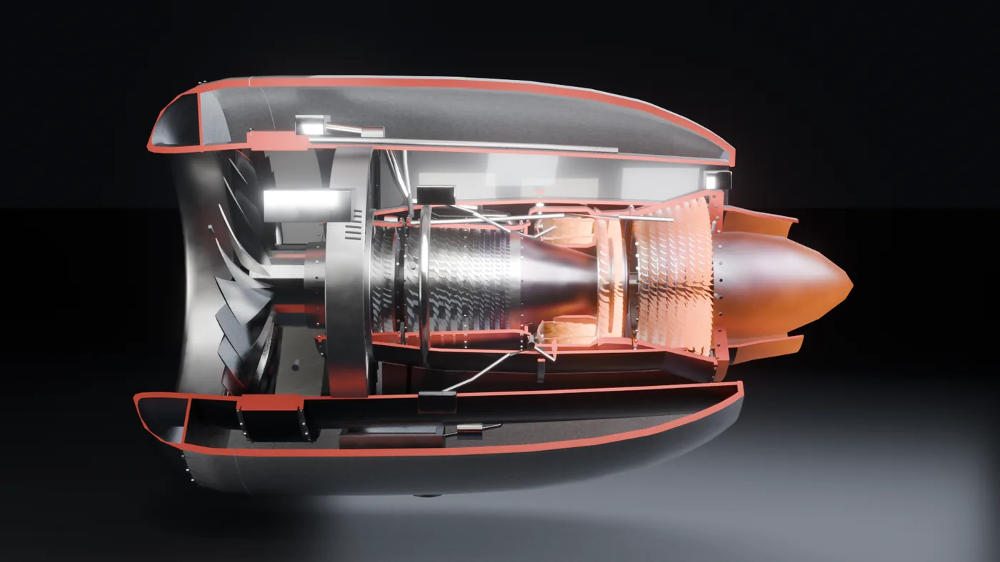
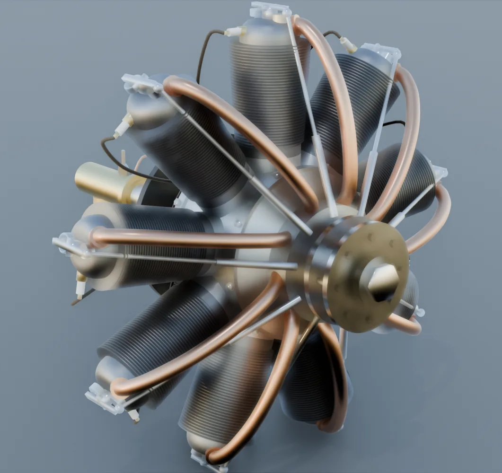
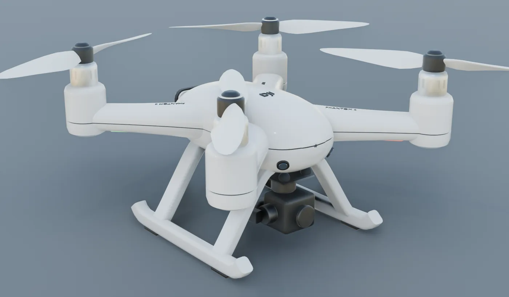
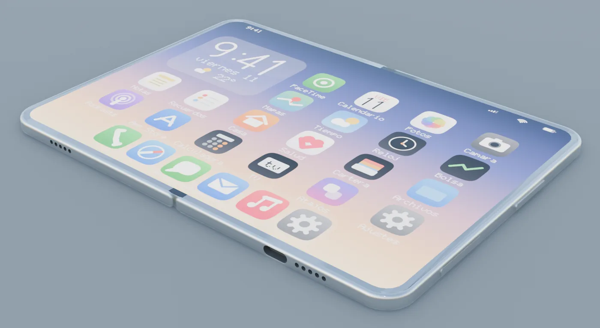
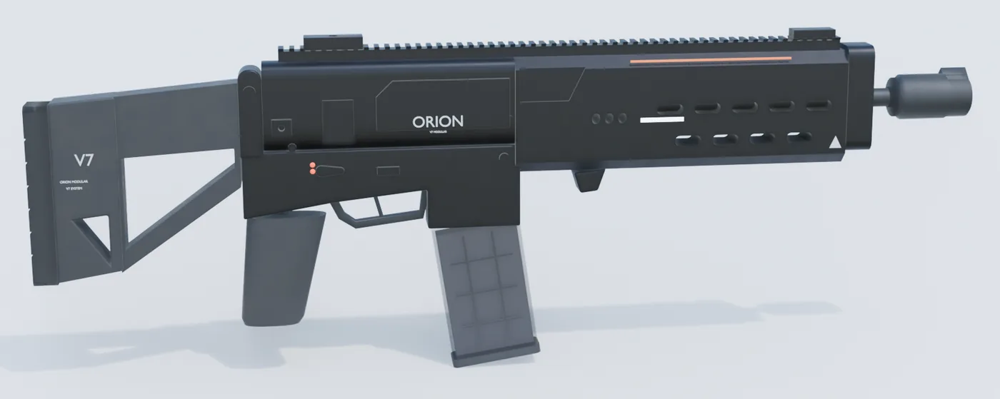
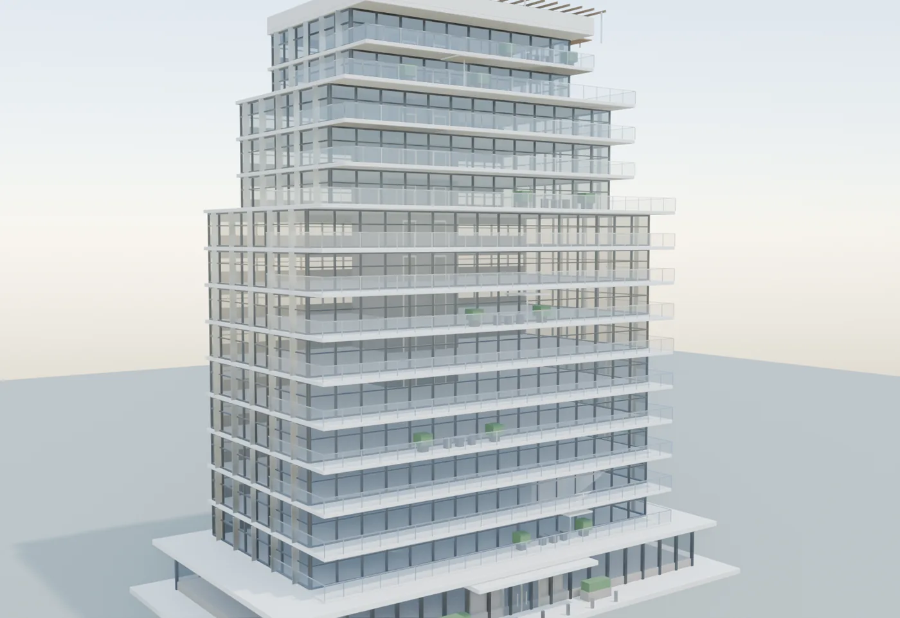

Nada de esto se ha tocado con el ratón.
Seis piezas modeladas dentro de Blender escribiendo código. Cada cota sale de un plano; cada tornillo, de una línea.

01 / 06Obra · Motor aeronáutico
Turbofan de doble eje
Cortado por la mitad para ver lo que pasa dentro. Sube de ralentí a máxima potencia y el flujo, la llama y el calor suben con él.

02 / 06Obra · Motor rotativo, 1917
Le Rhône 9C
El motor giraba entero con la hélice. Ciento tres piezas levantadas desde las cotas del manual, con su despiece animado.

03 / 06Obra · Dron
Phantom 4
Huella de 289,5 mm exactos, carcasa de dos valvas con su costura y hélices con torsión por paso. Despega, se queda quieto y el gimbal le aguanta el horizonte.

04 / 06Concepto · Mecanismo
El plegable
Todo el mecanismo cuelga de un solo mando: de 0 a 180° giran las mitades, la pantalla hace la gota y la interfaz se muda a la pantalla de fuera.

05 / 06Obra · Hard surface
ORION V7
Un arma de ficción sacada de una imagen. Detrás lleva física de verdad: retroceso, recarga, casquillos que caen al suelo y rebotan.

06 / 06Concepto · Promoción inmobiliaria
La torre
Catorce plantas con muro cortina, núcleo y terrazas amuebladas, para una web que se recorre a scroll mientras el sol cruza la fachada.
Beagentry
Software avanzado, agentes que trabajan solos y webs construidas a mano.
Modelado por código en Blender